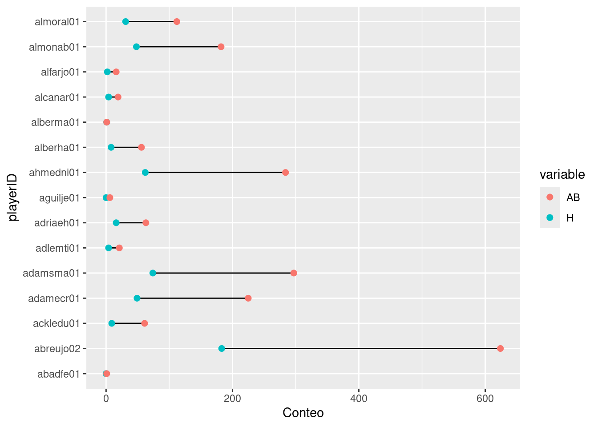
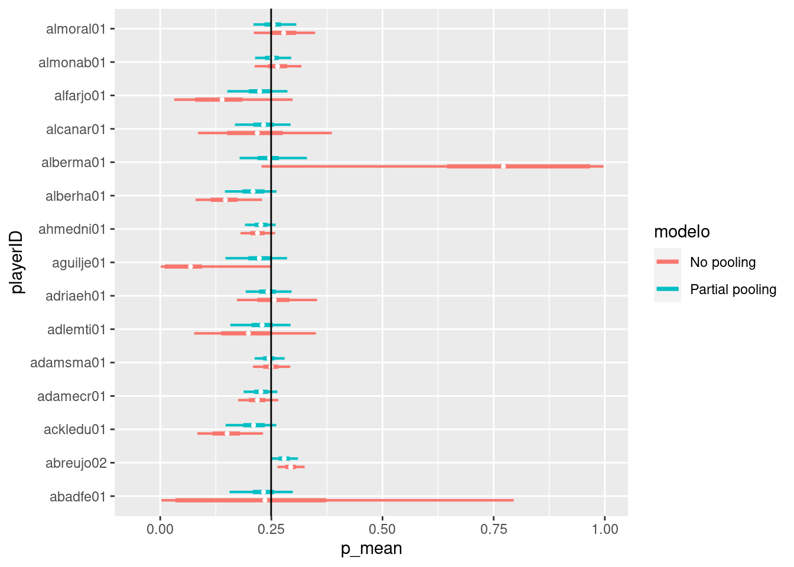

library(brms)
library(dplyr)
library(ggplot2)
df <- readr::read_csv(
paste0(
"https://raw.githubusercontent.com/estadisticaunr/estadistica-bayesiana/",
"main/datos/batting.csv"
)
)
df |>
select(playerID, H, AB) |>
tidyr::pivot_longer(
cols = c("H", "AB"),
names_to = "variable"
) |>
ggplot() +
geom_segment(
aes(x = AB, xend = H, y = playerID, yend = playerID),
data = df
) +
geom_point(
aes(x = value, y = playerID, color = variable),
size = 2
) +
labs(x = "Conteo")
m_no_pooling <- brm(
H | trials(AB) ~ 0 + playerID,
df,
family = "binomial",
prior = prior(normal(0, 3), class = b),
control = list(adapt_delta = 0.9),
refresh = 0
)
m_partial_pooling <- brm(
H | trials(AB) ~ 1 + (1 | playerID),
df,
family = "binomial",
prior = c(
prior(normal(0, 1), class = sd, group = playerID),
prior(normal(0, 3), class = Intercept)
),
control = list(adapt_delta = 0.9),
refresh = 0
)
df_preds_no_pooling <- data.frame(
p = as.vector(posterior_epred(m_no_pooling, dpar = "mu")),
playerID = rep(df$playerID, each = 4000),
draw = rep(1:4000, times = nrow(df))
)
df_preds_no_pooling_agg <- df_preds_no_pooling |>
group_by(playerID) |>
summarise(
p_mean = mean(p),
p_ll = quantile(p, 0.05),
p_l = quantile(p, 0.25),
p_u = quantile(p, 0.75),
p_uu = quantile(p, 0.95)
)
df_preds_no_pooling_agg <- merge(
df_preds_no_pooling_agg, df[c("playerID", "AB", "H")],
by = "playerID"
)
df_preds_no_pooling_agg$label <- paste(
df_preds_no_pooling_agg$H,
df_preds_no_pooling_agg$AB,
sep = ":"
)
df_preds_partial_pooling <- data.frame(
p = as.vector(posterior_epred(m_partial_pooling, dpar = "mu")),
playerID = rep(df$playerID, each = 4000),
draw = rep(1:4000, times = nrow(df))
)
df_preds_partial_pooling_agg <- df_preds_partial_pooling |>
group_by(playerID) |>
summarise(
p_mean = mean(p),
p_ll = quantile(p, 0.05),
p_l = quantile(p, 0.25),
p_u = quantile(p, 0.75),
p_uu = quantile(p, 0.95)
)
df_preds_partial_pooling_agg <- merge(
df_preds_partial_pooling_agg, df[c("playerID", "AB", "H")],
by = "playerID"
)
df_preds_partial_pooling_agg$label <- paste(
df_preds_partial_pooling_agg$H,
df_preds_partial_pooling_agg$AB,
sep = ":"
)
df_preds_agg <- rbind(df_preds_no_pooling_agg, df_preds_partial_pooling_agg)
df_preds_agg$modelo <- rep(c("No pooling", "Partial pooling"), each = 15)
ggplot(df_preds_agg) +
geom_text(
aes(y = playerID, label = label),
x = -0.25
) +
geom_linerange(
aes(xmin = p_l, xmax = p_u, y = playerID, color = modelo),
linewidth = 1.25,
position = position_dodge(width = 0.5)
) +
geom_linerange(
aes(xmin = p_ll, xmax = p_uu, y = playerID, color = modelo),
linewidth = 0.75,
position = position_dodge(width = 0.5)
) +
geom_point(
aes(x = p_mean, y = playerID, group = modelo),
color = "white",
size = 0.8,
position = position_dodge(width = 0.5)
) +
geom_vline(xintercept = sum(df$H) / sum(df$AB)) +
xlim(-0.05, 1)